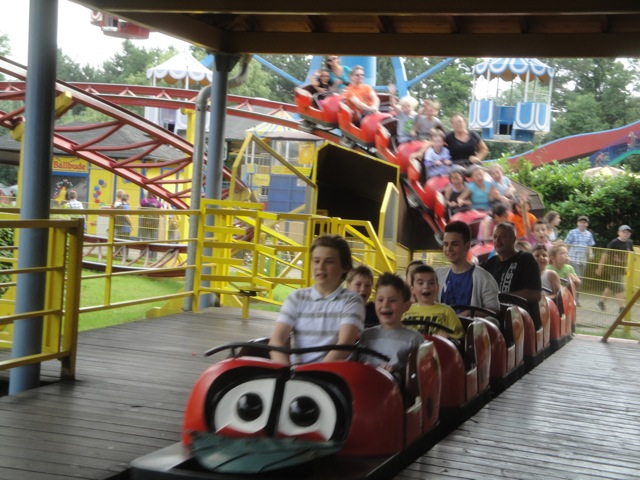
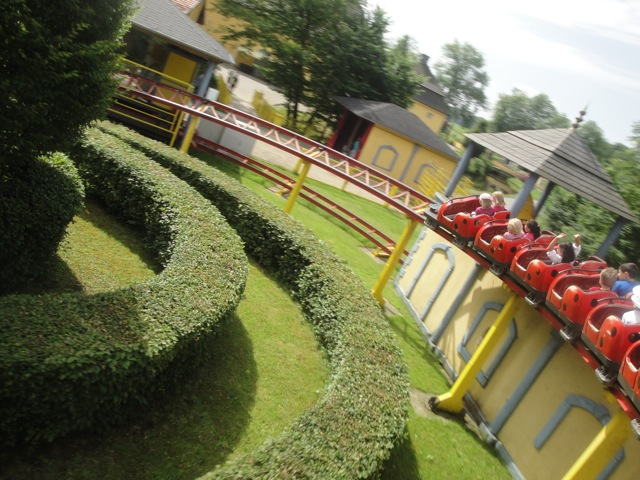
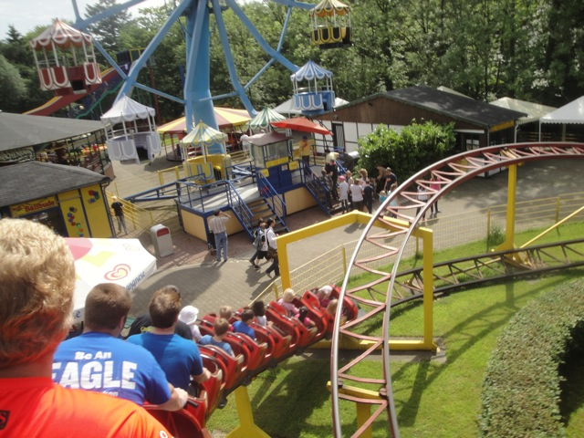

| |
Familienachterbahn Review

We're here at Schlossbeck where's we'll be revewing the kiddy coaster, as well as the only credit in the park. Familienachterbahn. We get in the cars, pull down the lap bar, and an operator actually sends us off. Yeah, this is the only ride in the park where you don't operate the ride. We head off and TAKE THE TUNNEL!!! Yeah, it's just a normal curve, but I like how they put the effort and made a tunnel for it. Still in the tunnel, we climb the lifthill. Hmm, very well put together for a playground park. Anyways, we pop out of the tunnel and head down the first drop that's slightly curved. Wee. We then head up this small hill, getting a nice view of the lifthill tunnel. We lose a lot of our speed (though we didn't have much to begin with). We then head into this big long curve, gaining some of our speed back. Yeah, this is actually a really small drawn out non-banked helix. We then go through an S bend, going through the hedges, and getting a nice view of Schlossbeck with the coaster and the ferris wheel. It almost looks Mario Kartish at this point. Kind of like Peach Gardens. But that's just me. We then rise up into a small hill, go around a turn, dip down, and into the station we go for another lap! YAY!!! Yeah, it's a kiddy credit, but it's the only credit here. Get it and then go boat jumping or something crazy like that.
3/10
Location: Schlossbeck
Opened: 1987
Built by: Zeirer
Last Ridden: June 28, 2012
I have ridden this exact same ride at the following parks.
Gilroy Gardens
Nagashima Spaland
Parc Asterix
Tobu Zoo
Familienachterbahn Photos


Home
|